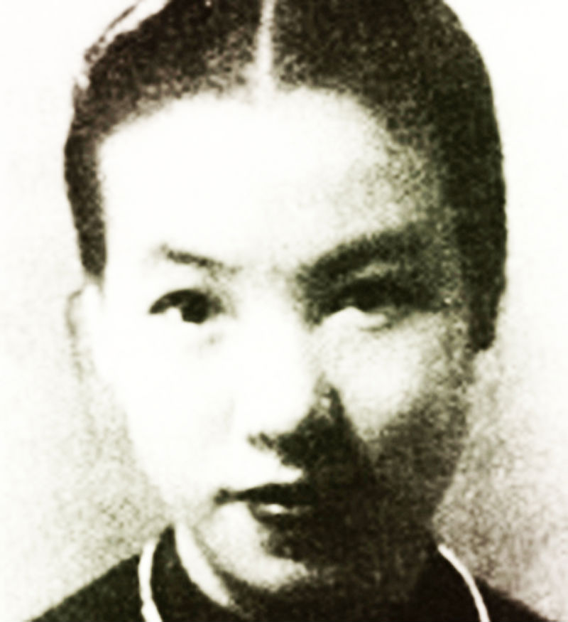

Cô Ba Trà, người đàn bà đẹp nhứt, được dư luận gọi là “Huê khôi Nam Kỳ” trong hai thập niên, sống như một bà hoàng không ngai, làm phá sản không biết bao công tử hào hoa, trí thức thời thượng đa tình, đến cả một ông Hoàng thân xứ Thái.

* Cậu Tư Phước George – Bạch Công Tử – một ông hoàng ăn chơi hào phóng đúng nghĩa trong lịch sử Việt Nam xưa nay chưa có người nào có thể so sánh được!
* Cậu Ba Qui – Hắc Công Tử -:” Tiền nhiều quá, không biết xài làm sao cho hết”…
* Các công tử Dù Hột, công tử Bích, công tử Cầu Ngang, công tử Út Nhu … đua nhau phá của cha mẹ để lại.
* Các người đẹp nổi tiếng một thời: cô Tư Nhị, cô Sáu Hương, cô Joséphine Lệ Ngọc…mỗi người một vẻ đài các phong lưu, ăn chơi trác táng!
Tài liệu để viết bài nầy gồm nhiều loại có xuất xứ khác nhau, chúng tôi sưu tầm và lưu giữ trong nhiều năm. Trước hết là tư liệu do một người bạn vong niên là cụ Nguyễn Văn Vực cung cấp, hay kể lại trực tiếp. Cụ Vực là một người đam mê các chuyện cổ, có trí nhớ phi thường, nhứt là những chuyện cụ nghe, thấy ở Nam Kỳ. Tài liệu của cụ chỉ thua cụ Vương Hồng Sển mà thôi. Cụ Nguyễn Văn Vực từng giữ chức Chánh sự vụ Sở thông tin đô thành Sài Sòn dưới thời Tổng Thổng Ngô Đình Diệm, và từng ra ứng cửa dân biểu Quốc Hội khoá I (1956) với dấu hiệu “Cái Nón Lá”. Tổng kết số phiếu cụ đứng hạng nhì sau ông Hà Như Chi, người của chính quyền.
Tài liệu mới nhứt là quyển “Sài Gòn tạp-pín-lù” của cụ Vương Hồng Sển, mới xuất bản bên nhà, do nhà văn Phạm Thăng nhã ý cho mượn. Mới đây do một sự tình cờ may mắn, tôi lại quen được với một gia đình là thân nhân của Cậu Tư Phước George, đó là ông bà Thái K.C. Tôi đến tận nhà để được nghe ông bà kể nhiều chi tiết về cuộc đời “Cậu Tư Phước George”, xem nhiều hình ảnh liên quan mà ông bà còn giữ được, cũng như các giai thoại về cuộc ăn chơi của Cậu Tư lúc qua Pháp du lịch. Ông bà Thái K.C. là cháu của bà kế mẫu Cậu Tư Phước George, tức bà thứ thất của ông Đốc Phủ Lê Công Sủng, thân phụ Cậu Tư Phước George, tức Lê Công Phước. Khi du học bên Tây, Cậu Tư có một người bạn đồng hành, đó là ông Thái Minh Phát, em của bà thứ thất kể trên. Theo vai vế trong gia đình, Cậu Tư phải gọi ông Thái Minh Phát bằng “cậu” vì em của mẹ (mẹ ghẻ). Tôi rất tiếc không tìm thấy hình Cậu Tư trong những tấm ảnh hiếm hoi của gia đình nầy.
Trong chương I, tức phần bối cảnh chung của lịch sử Nam Kỳ vào mấy thập niên đầu của thế kỷ 20 chúng tôi sử dụng một phần lớn trong quyển sách nhan đề “The French present in Cochinchina and Cambodia” của tác giả Milton E. Osbone, tiến sĩ sử học Đông Nam Á tại đại học đường Cornell.
Ngoài ra còn nhiều tài liệu rời rạc khác hoặc do chính một người trong cuộc kể lại (công tử Út Nhu), một số sách báo cũ.
Tác giả xin trân trọng gởi đến quý vị có phương danh nêu trên lòng biết ơn chân thành. Riêng với độc giả mặc dầu đã cố gắng nhiều, nhưng chắc chắn chúng tôi không khỏi thiếu sót, sai lầm không cố ý, kính xin quý vị niệm tình tha thứ và chỉ dạy thêm, chúng tôi xin đa tạ..